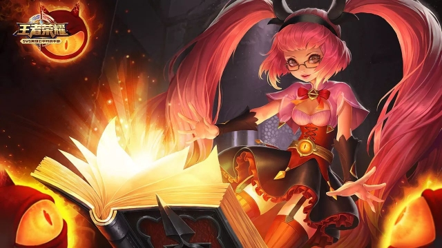

我叫叶晨欣
来自
福建厦门
（欢迎大家来厦门玩！我可以教大家说闽南话！也可以一起玩中秋
博饼
)
成长经历：放养型成长的典范，从小上过很多兴趣班结果大部分都只学会一些皮毛，真正擅长（其实也算不上）的是钢琴和舞蹈（拉丁舞和民族舞都会一些），喜欢写作（高中毕业后写作能力退化的很厉害TT），从小一路半玩半学的混到北大。
兴趣爱好：玩游戏（王者荣耀：最喜欢的英雄是安琪拉和貂蝉看各种清宫小说和清宫剧（本人
甄嬛传
十级爱好者）
联系方式：微信号：xx18205915780